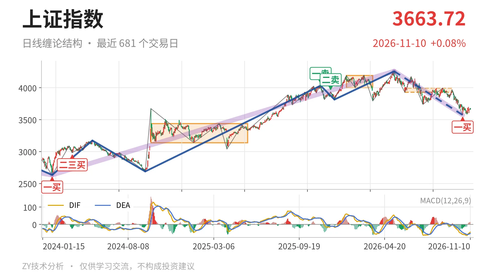
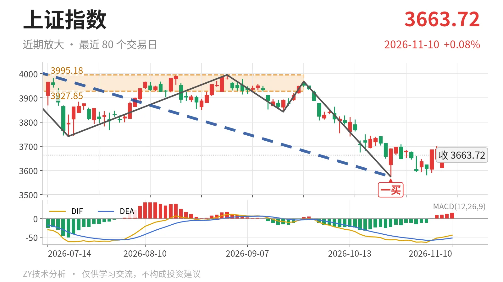

上证指数｜反抽未回中枢 三卖待验

最近日线中枢 3927.85—3995.18点，收盘位于中枢之下
一句话：日线回落段未结束，反抽不回3928点前，偏弱看三卖
📉 走势结构：下跌段主导，大级别涨势未坏
当前日线仍处于5月14日4258.86点以来的下跌线段里，该线段还没有结束。更大级别看，2021年2月18日至2024年2月5日的下跌段已经结束。2024年2月5日2635.09点至2026年5月14日4258.86点的上涨走势尚未走完。因此5月14日至今的回落，暂视为大级别上涨段中的回撤。这轮回落已经走出7笔，跌幅约16.1%。10月23日见3574.27点后，反弹还没走出反向日线笔，下跌段主导未变。

🧭 中枢与位置：最新价在中枢下方，中枢下移
最新收盘3663.72点低于6月8日至9月22日日线笔中枢（3927.85—3995.18点）下沿，幅度约6.7%。该中枢尚未完成，但中枢区间从前一区间4002.78—4190.87点下移。下沿由4002.78点降至3927.85点，属于中枢下移。目前指数仍在下沿下方，反弹只是对3928点一线的反抽，还没回到中枢内部。
🛑 买卖点：最近一买未升级，上方二卖压制
最近的日线笔级别买点是10月23日一买3574.27点，对应9月22日至10月23日的下跌笔。其后10月26日至11月10日走势最高3708.20点、最低3580.38点，尚未形成反向笔。因此该一买仍停留在日线笔级别。上方2025年12月8日二卖3936.31点、2025年11月14日一卖4034.08点仍未触及。若后续跌破3574点，这个一买只对应局部低点，不能带动日线线段转折。

⚖️ 背驰：价格新低，面积未缩，反弹级别有限
9月22日至10月23日下跌笔与6月23日至7月20日下跌笔比较，没有出现标准的“新低不新弱”。价格创新低至3574.27点，绿柱面积却从289扩大到347。DIF低点从-61.8抬到-57.1，面积没有同步收缩。因此10月23日一买不是强背驰转折，更偏下跌段内部的结构买点。最新MACD的DIF为-44.6、DEA为-52.2，DIF仍在零轴下方，柱值15.2，反弹只是零轴下修复。
🔎 关键位置：反抽看3928点，回落看3574点
短期结构只看两个位置：上方3928点附近，下方3574点附近。10月23日以来的反抽若回不到3928点上方，再向下离开，结构上构成对6月8日至9月22日中枢的三卖。若重新站上3928点，则更可能只是中枢扩展。下方3574点若跌破，10月23日一买被破坏，5月14日以来下跌段延续，再下方看3419点附近。3419点对应2021年7月28日至2023年5月9日线段中枢上沿3418.95点。当前反弹最高仅3708.20点，距3928点约220点，日线结构偏弱，弱在反抽未回中枢下沿。
⚠️ 本文为基于公开行情数据的缠论技术结构记录，由程序自动计算并生成，仅供学习交流，不构成任何投资建议。市场有风险，投资需谨慎。